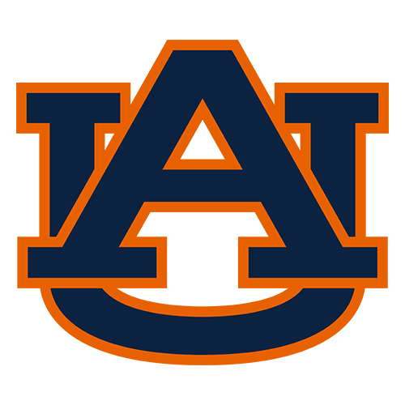

MAY 22, 2026 · DEAD PERIOD · HERITAGE WINDOW · 2025 SEASON

Auburn
5-7AP #22COACHES #25
Founded 1892Titles 2Conf titles 15Heismans 3Bowls 47Conference SECStadium Jordan-Hare Stadium (88,043)Legacy Ralph 'Shug' Jordan
Auburn is the program the SEC West cannot schedule around. Five-and-seven is the record, and the record is not the argument; the argument is that a 20-27 loss to Alabama in Week 14 closed a season the polls still ranked, #22 in the AP and #25 in the coaches, because the league knows what a Saturday in Jordan-Hare's 88,043 seats actually costs. The Hugh Freeze era is a bet on returning this program to the standard set in 1957 and again in 2010, the standard Sullivan and Jackson and Newton wore home. Spring practice, the portal, the draft — the off-season work is underway, patient and unsentimental. The eagle flight belongs to us. The Iron Bowl comes back around. War Eagle.
RECORD
5-7
win% .416
AP
#22
top-25
SP+
+1.5
CFP STANDING
Season closed
The Pulse on Auburn
QUIET · dead period heritage · signal ramps back in camp
—
Aubie is on campus. Signal returns when the cow-bells do.
"War Eagle is the greeting; the eagle flight before kickoff is the ritual."— Auburn fanbase · recurring line
0 mentions · awaiting signal
Rituals
The rituals that anchor a Saturday in this program's world.
EFkickoff
Eagle Flight Pre-Game
since 2000
A live golden eagle (Nova or Aurea, alternating) launches from the upper deck of Jordan-Hare and spirals down to midfield as 87,000 fans roar 'WAAAAR EAGLE!' through the descent. The fan voice is built into the ritual — the eagle's flight times the chant. One of the most theatrical pre-game traditions in sports.
RTafter every footba
Rolling Toomer's Corner
since 1972
Fans wrap the oak trees at the intersection of College Street and Magnolia Avenue in toilet paper. The 2010 BCS title run drowned the corner in white. The original oaks were poisoned by an Alabama fan in 2010 and replaced; the ritual continued through the interregnum on new trees.
WEscoring
War Eagle Cheer
since 1914
Not a fight song, not a chant — a call-and-response that defines Auburn fandom. Origin stories vary (the Civil War veteran's pet eagle is the favored one). Used as greeting, sign-off, victory cry, condolence. The phrase IS the program.
TWkickoff
Tiger Walk
since 1962
Players walk from Sewell Hall to Jordan-Hare through a corridor of fans. Originated when fans spontaneously lined the route in 1962; codified into a ritual within a decade. Replicated (badly) at programs nationwide; Auburn's was the prototype.
IBlast week of regul
Iron Bowl Week
since 1893
Not a single ritual — a 7-day suspension of normal life for both fanbases. The 2013 Kick Six, the 2010 comeback, the 1972 Punt Bama Punt — Auburn's identity is partly measured in Iron Bowl miracles. Calendar marker that overrides everything else.
The Chronicle
2025 season · editorial observations
MOMENT
Auburn Drops 62 on Mercer, Largest Margin Since the Malzahn Years
Jordan-Hare hadn't seen a beatdown like this in a long time. The Tigers put 62 on Mercer on November 22nd, winning by 45 in a game that ran nearly 39 points hotter than their season average. The Freeze Era is finding its teeth.
gamelog · 2025 season · wk 13ANOMALY
Auburn's Run Defense Is Suffocating the SEC at a Historic Rate
Opponents are generating negative rushing EPA against Auburn in 2025 — minus-0.121 per carry — a figure that ranks in the 99th percentile of FBS and the 96th percentile of all-time seasons. The Freeze Era defensive front is doing something the Malzahn years never consistently managed: making the SEC West pay in the trenches before the game is decided anywhere else. Jordan-Hare hasn't seen run defense this dominant in a long time.
Savant card · 2025 season through postseasonFLASHPOINT
Auburn Falls 20-27 to Alabama, Third Straight Iron Bowl Loss
The Iron Bowl ledger has tilted Alabama's way three consecutive times — margins of 3, 14, and 7. Auburn hasn't strung together a losing run in this series like this since before the Tuberville Run rewrote the stakes. The Freeze Era has its defining test right there on the schedule, same as every other year: settle the debt in November.
from the Iron Bowl archive · last met 2025
THE SAVANT CARD · Auburn · 2025
Auburn reads strongest in rushing epa allowed (top 2%) and rushing epa (top 10%); the crux lives in explosive plays, where Auburn sits at the 8th percentile.